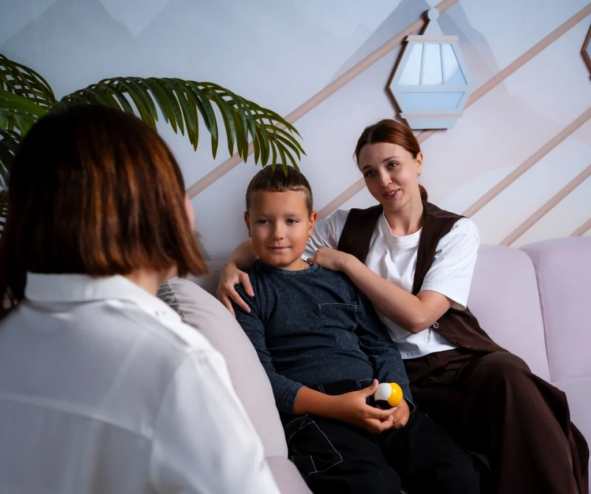

1. Preparing for Exams
- working with procrastination;
- anxious thoughts;
- realistic planning;
- organising preparation.
Programmes
Programmes complement individual work and provide structure, skills and a supportive setting. Upcoming intake dates, format and fees are confirmed when you get in touch.
The programme focuses on reducing exam-related anxiety and developing lasting self-regulation skills.
We support families during pregnancy, while preparing for parenthood and as they adjust after a baby is born.
The programme does not promise prevention of medical complications and does not replace medical care.
A supportive programme for parents who want to better understand their child’s behaviour, manage their own anxiety and build resilient communication in the family.
